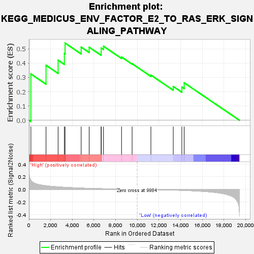
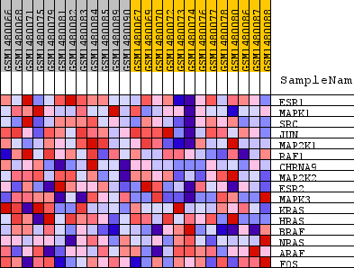
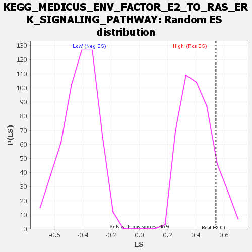

| Dataset | WG6v3.CPT1A.cls#High_versus_Low.CPT1A.cls#High_versus_Low_repos |
| Phenotype | CPT1A.cls#High_versus_Low_repos |
| Upregulated in class | High |
| GeneSet | KEGG_MEDICUS_ENV_FACTOR_E2_TO_RAS_ERK_SIGNALING_PATHWAY |
| Enrichment Score (ES) | 0.54137355 |
| Normalized Enrichment Score (NES) | 1.3266261 |
| Nominal p-value | 0.13686535 |
| FDR q-value | 1.0 |
| FWER p-Value | 1.0 |

| SYMBOL | TITLE | RANK IN GENE LIST | RANK METRIC SCORE | RUNNING ES | CORE ENRICHMENT | |
|---|---|---|---|---|---|---|
| 1 | ESR1 | ESR1 | 179 | 0.143 | 0.3247 | Yes |
| 2 | MAPK1 | MAPK1 | 1576 | 0.057 | 0.3857 | Yes |
| 3 | SRC | SRC | 2690 | 0.040 | 0.4210 | Yes |
| 4 | JUN | JUN | 3267 | 0.033 | 0.4688 | Yes |
| 5 | MAP2K1 | MAP2K1 | 3334 | 0.033 | 0.5414 | Yes |
| 6 | RAF1 | RAF1 | 4819 | 0.021 | 0.5131 | No |
| 7 | CHRNA9 | CHRNA9 | 5558 | 0.016 | 0.5123 | No |
| 8 | MAP2K2 | MAP2K2 | 6665 | 0.011 | 0.4808 | No |
| 9 | ESR2 | ESR2 | 6666 | 0.011 | 0.5064 | No |
| 10 | MAPK3 | MAPK3 | 6879 | 0.010 | 0.5190 | No |
| 11 | KRAS | KRAS | 8544 | 0.004 | 0.4435 | No |
| 12 | HRAS | HRAS | 9520 | 0.001 | 0.3966 | No |
| 13 | BRAF | BRAF | 11253 | -0.004 | 0.3166 | No |
| 14 | NRAS | NRAS | 13317 | -0.011 | 0.2371 | No |
| 15 | ARAF | ARAF | 14110 | -0.016 | 0.2333 | No |
| 16 | FOS | FOS | 14325 | -0.017 | 0.2626 | No |

